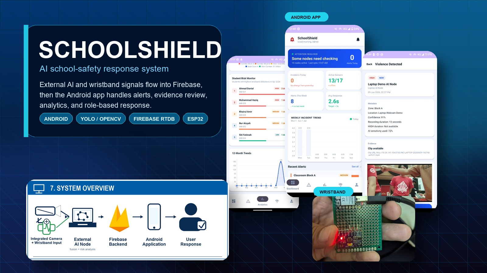

An AI-assisted school-safety response prototype that connects external camera analysis, ESP32 wristband motion events, Firebase realtime records and an Android monitoring app.

Android + Firebase + AI vision + IoT
Detection is only the start. The response workflow matters.
SchoolShield was designed as a monitoring and management prototype rather than a phone-camera detector. External sources generate structured incidents, Firebase synchronizes them, and the Android app gives authorized users alerts, incident details, evidence review and analytics.
Project summary
Final Year Project
AI-Based Surveillance System for Analyzing Bullying and Violent Behaviors in Schools
The project explores how a possible high-risk event can move from external detection into a practical school response flow: alerting, review, evidence control and reporting.
Built a native Android app with dashboard, incidents, analytics, sensors, profile and evidence-review screens.
Connected Firebase Authentication, Realtime Database and Cloud Messaging for live incident updates and alert notifications.
Developed an external Python OpenCV and YOLO-based AI node for camera-side risk analysis and evidence recording.
Integrated an ESP32 wristband prototype that can send motion-based risk events to the same incident pipeline.
How it works
01 / Input
External sources
Camera streams and wristband signals stay outside the phone. The Android app acts as the response interface, not the surveillance device.
02 / Backend
Firebase pipeline
Incident records, source status, user roles, settings and alert data are synchronized through Firebase services.
03 / Response
Android workflow
Authorized users can review alerts, filter incidents, inspect evidence, monitor sources and view analytics by role.
Main features
Realtime alerts
High-risk incidents trigger Android notifications with sound and vibration, while old, duplicate or unauthorized alerts are filtered.
Evidence review
Incident details can show metadata, status, confidence, notes and available video evidence when the user role allows access.
Analytics
Admin views include zone patterns, monthly trends, student wristband summaries and report generation for review.
Source monitoring
The app tracks cameras, external AI nodes and wristband sources with online/offline status and last-seen details.
Project images
Click any image to open it larger. The poster image comes from your SchoolShield poster PDF.
{kind=link}
{kind=link}
{kind=link}
{kind=link}
{kind=link}
{kind=link}
{kind=link}
{kind=link}